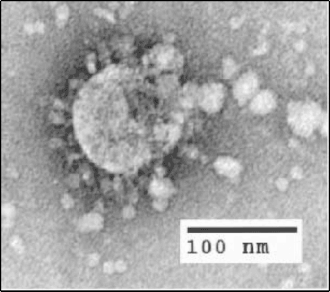

Coronaviruses belong to the Coronaviridae family in the Nidovirales order. Corona represents crown-like spikes on the outer surface of the virus; thus, it was named as a coronavirus.The earliest reports of a coronavirus infection in animals occurred in the late 1920s, when an acute respiratory infection of domesticated chickens emerged in North America.Arthur Schalk and M.C. Hawn in 1931 made the first detailed report which described a new respiratory infection of chickens in North Dakota. The infection of new-born chicks was characterized by gasping and listlessness with high mortality rates of 40–90%.The virus was then known as infectious bronchitis virus (IBV).In the late 1940s, two more animal coronaviruses, JHM that causes brain disease (murine encephalitis) and mouse hepatitis virus (MHV) that causes hepatitis in mice were discovered. It was not realized at the time that these three different viruses were related.
Later on Human coronaviruses were discovered in the 1960s. Researchers developed two more types of this coronavirus named 229E and B814 virus.These virus caused cold in volunteers but was inactivated by ether. Other human coronaviruses have since been identified, including SARS-CoV in 2003, HCoV NL63 in 2003, HCoV HKU1 in 2004, MERS-CoV in 2013, and SARS-CoV-2 in 2019. There have also been a large number of animal coronaviruses identified since the 1960s.
The alpha and beta genera are derived from the bat gene pool, the gamma and delta genera are derived from the avian and pig gene pools.
Three coronaviruses have crossed the species barrier to cause deadly pneumonia in humans since the beginning of the 21st century: severe acute respiratory syndrome coronavirus (SARS-CoV) (Drosten et al., 2003, Ksiazek et al., 2003), Middle-East respiratory syndrome coronavirus (Zaki et al., 2012) (MERS-CoV), and SARS-CoV-2 (Huang et al., 2020, Zhu et al., 2020). SARS-CoV emerged in the Guangdong province of China in 2002 and spread to five continents through air travel routes, infecting 8,098 people and causing 774 deaths. In 2012, MERS-CoV emerged in the Arabian Peninsula, where it remains a major public health concern, and was exported to 27 countries, infecting a total of ∼2,494 individuals and claiming 858 lives. And the third one is SARS-CoV-2,which now is known as covid - 19 , and the most life threatening one.
Severe acute respiratory syndrome coronavirus (SARS-CoV or SARS-CoV-1) is a strain of coronavirus that causes severe acute respiratory syndrome (SARS).It is a type of betacorona virus. It is an enveloped, positive-sense, single-stranded RNA virus which infects the epithelial cells within the lungs. The virus enters the host cell by binding to angiotensin-converting enzyme 2. It infects humans, bats, and palm civets. It causes an often severe illness and is marked initially by systemic symptoms of muscle pain, headache, and fever, followed in 2–14 days by the onset of respiratory symptoms, mainly cough, dyspnea, and pneumonia. Another common finding in SARS patients is a decrease in the number of lymphocytes circulating in the blood. In the SARS outbreak of 2003, about 9% of patients with confirmed SARS-CoV-1 infection died. The mortality rate was much higher for those over 60 years old, with mortality rates approaching50% for this subset of patients.
Middle East respiratory syndrome (MERS), also known as camel flu, is a viral respiratory infection caused by Middle East respiratory syndrome–related coronavirus (MERS-CoV).Symptoms may range from none, to mild, to severe. Typical symptoms include fever, cough, diarrhea, and shortness of breath. The disease is typically more severe in those with other health problems.MERS-CoV is a coronavirus believed to be originally from bats. However, humans are typically infected from camels, either during direct contact or indirectly. Spread between humans typically requires close contact with an infected person. Its spread is uncommon outside of hospitals. Thus, its risk to the global population is currently deemed to be fairly low. Diagnosis is by rRT-PCR testing of blood and respiratory samples.There has been evidence of limited, but not sustained spread of MERS-CoV from person to person, both in households as well as in health care settings like hospitals. Most transmission has occurred "in the circumstances of close contact with severely ill persons in healthcare or household settings" and there is no evidence of transmission from asymptomatic cases.
The coronavirus was officially named severe acute respiratory syndrome coronavirus 2 (SARS-CoV-2) by the International Committee on Taxonomy of Viruses based on phylogenetic analysis. SARS-CoV-2 is believed to be a spillover of an animal coronavirus and later adapted the ability of human-to-human transmission. Because the virus is highly contagious, it rapidly spreads and continuously evolves in the human population. The coronavirus was officially named severe acute respiratory syndrome coronavirus 2 (SARS-CoV-2) by the International Committee on Taxonomy of Viruses based on phylogenetic analysis. SARS-CoV-2 is believed to be a spillover of an animal coronavirus and later adapted the ability of human-to-human transmission. Because the virus is highly contagious, it rapidly spreads and continuously evolves in the human population.
The symptomatology of these patients, including fever, malaise, dry cough, and dyspnea, was diagnosed as viral pneumonia [1,2]. Initially, the disease was called Wuhan pneumonia by the press because of the area and pneumonia symptoms. Whole-genome sequencing results showed that the causative agent is a novel coronavirus. Therefore, this virus is the seventh member of the coronavirus family to infect humans. The World Health Organization (WHO) temporarily termed the new virus 2019 novel coronavirus (2019-nCoV) on 12 January 2020 and then officially named this infectious disease coronavirus disease 2019 (COVID-19) on 12 February 2020.SARS-CoV-2 is associated with an ongoing outbreak of atypical pneumonia (Covid-2019) that has affected over 90,000 people and killed more than 3,000 of those affected in >60 countries as of March 3, 2020. On January 30, 2020, the World Health Organization declared the SARS-CoV-2 epidemic a public health emergency of international concern.
The first confirmed human infections were in Wuhan, Hubei, China. A study of the first 41 cases of confirmed COVID-19, published in January 2020 in The Lancet, reported the earliest date of onset of symptoms as 1 December 2019. Official publications from the WHO reported the earliest onset of symptoms as 8 December 2019. Human-to-human transmission was confirmed by the WHO and Chinese authorities by 20 January 2020. According to official Chinese sources, these were mostly linked to the Huanan Seafood Wholesale Market, which also sold live animals. In May 2020 George Gao, the director of the CDC, said animal samples collected from the seafood market had tested negative for the virus, indicating that the market was the site of an early superspreading event, but that it was not the site of the initial outbreak. Traces of the virus have been found in wastewater samples that were collected in Milan and Turin, Italy, on 18 December 2019
By December 2019, the spread of infection was almost entirely driven by human-to-human transmission. The number of coronavirus cases in Hubei gradually increased, reaching sixty by 20 December, and at least 266 by 31 December. On 24 December, Wuhan Central Hospital sent a bronchoalveolar lavage fluid (BAL) sample from an unresolved clinical case to sequencing company Vision Medicals. On 27 and 28 December, Vision Medicals informed the Wuhan Central Hospital and the Chinese CDC of the results of the test, showing a new coronavirus. A pneumonia cluster of un cause was observed on 26 December and treated by the doctor Zhang Jixian in Hubei Provincial Hospital, who informed the Wuhan Jianghan CDC on 27 December. On 30 December, a test report addressed to Wuhan Central Hospital, from company CapitalBio Medlab, stated an erroneous positive result for SARS, causing a group of doctors at Wuhan Central Hospital to alert their colleagues and relevant hospital authorities of the result. The Wuhan Municipal Health Commission issued a notice to various medical institutions on "the treatment of pneumonia of unknown cause" that same evening. Eight of these doctors, including Li Wenliang (punished on 3 January), were later admonished by the police for spreading false rumours and another, Ai Fen, was reprimanded by her superiors for raising the alarm. The Wuhan Municipal Health Commission made the first public announcement of a pneumonia outbreak of unknown cause on 31 December, confirming 27 cases – enough to trigger an investigation.
During the early stages of the outbreak, the number of cases doubled approximately every seven and a half days. In early and mid-January 2020, the virus spread to other Chinese provinces, helped by the Chinese New Year migration and Wuhan being a transport hub and major rail interchange. On 20 January, China reported nearly 140 new cases in one day, including two people in Beijing and one in Shenzhen. Later official data shows 6,174 people had already developed symptoms by then, and more may have been infected. A report in The Lancet on 24 January indicated human transmission, strongly recommended personal protective equipment for health workers, and said testing for the virus was essential due to its "pandemic potential". On 30 January, the WHO declared the coronavirus a Public Health Emergency of International Concern. By this time, the outbreak spread by a factor of 100 to 200 times.
Italy had its first confirmed cases on 31 January 2020, two tourists from China. Italy overtook China as the country with the most deaths on 19 March 2020. By 26 March the United States had overtaken China and Italy with the highest number of confirmed cases in the world. Research on coronavirus genomes indicates the majority of COVID-19 cases in New York came from European travellers, rather than directly from China or any other Asian. Retesting of prior samples found a person in France who had the virus on 27 December 2019, and a person in the United States who died from the disease on 6 February 2020.
The first cases of COVID-19 in India were reported in the towns of Thrissur, Alappuzha and Kasargod, all in the state of Kerala, among three Indian medical students who had returned from Wuhan. Lockdowns were announced in Kerala on 23 March, and in the rest of the country on 25 March. By mid-May 2020, five cities accounted for around half of all reported cases in the country: Mumbai, Delhi, Ahmedabad, Chennai and Thane. On 10 June, India's recoveries exceeded active cases for the first time. Infection rates started to drop in September, along with the number of new and active cases. Daily cases peaked mid-September with over 90,000 cases reported per-day, dropping to below 15,000 in January 2021.
A second wave beginning in March 2021 was much larger than the first, with shortages of vaccines, hospital beds, oxygen cylinders and other medicines in parts of the country. By late April, India led the world in new and active cases. On 30 April 2021, it became the first country to report over 400,000 new cases in a 24-hour period. Health experts believe that India's figures have been underreported due to several factors.
On 12 January 2020, the WHO confirmed that a novel coronavirus was the cause of a respiratory illness in a cluster of people in Wuhan, Hubei, China, which was reported to the WHO on 31 December 2019. On 30 January 2020, India reported its first case of COVID-19 in Thrissur, Kerala, which rose to three cases by 3 February 2020; all were students returning from Wuhan. Apart from these, no significant rise in transmissions was observed in February. On 4 March, 22 new cases were reported, including 14 infected members of an Italian tourist group. Transmissions increased over the month after several people with travel history to affected countries, and their contacts, tested positive. On 12 March, a 76-year-old man, with a travel history to Saudi Arabia, became the first COVID-19 fatality of India.
A Sikh preacher, who had a travel history to Italy and Germany, turned into a superspreader by attending a Sikh festival in Anandpur Sahib during 10–12 March. Over 40,000 people in 20 villages in Punjab were quarantined on 27 March to contain the spread. On 31 March, a Tablighi Jamaat religious congregation event in Delhi, which had taken place earlier in March, emerged as a COVID-19 hotspot. On 2 May, around 4,000 stranded pilgrims returned from Hazur Sahib in Nanded, Maharashtra to Punjab. Many of them tested positive, including 27 bus drivers and conductors who had been part of the transport arrangement.
In July 2020, it was estimated based on antibody tests that at least 57% of the inhabitants of Mumbai's slums may have been infected with COVID-19 at some point. A government panel on COVID-19 stated in October 2020 that the pandemic had peaked in India, and could come under control by February 2021.[41] This prediction was based on a mathematical simulation referred to as the "Indian Supermodel", assuming that India reaches herd immunity.That month, a new SARS-CoV-2 variant, Lineage B.1.617, was detected in the country.
India began its vaccination programme on 16 January 2021. On 19 January 2021, nearly a year after the first reported case in the country, Lakshadweep became the last region of India to report its first case. By February 2021, daily cases had fallen to 9,000 per-day. However, by early-April 2021, a major second wave of infections took hold in the country; on 9 April, India surpassed 1 million active cases, and by 12 April, India overtook Brazil as having the second-most COVID-19 cases worldwide. By late April, India passed 2.5 million active cases and was reporting an average of 300,000 new cases and 2,000 deaths per-day. Some analysts feared this was an undercount. On 30 April, India reported over 400,000 new cases and over 3,500 deaths in one day
Multiple factors have been proposed to have potentially contributed to the sudden spike in cases, including highly-infectious variants of concern such as Lineage B.1.617, a lack of preparations as temporary hospitals were often dismantled after cases started to decline, and new facilities were not built, and health and safety precautions being poorly-implemented or enforced during weddings, festivals (such as Holi on 29 March, and the Haridwar Kumbh Mela which was linked to linked to at least 1,700 positive cases between 10 and 14 April including cases in Hindu seers), sporting events (such as IPL), state and local elections in which politicians and activists have held in several states, and in public places. An economic slowdown put pressure on the government to lift restrictions, and there had been a feeling of exceptionalism based on the hope that India's young population and childhood immunisation scheme would blunt the impact of the virus. Models may have underestimated projected cases and deaths due to the under-reporting of cases in the country.
The second wave placed a major strain on the healthcare system, including a shortage of liquid medical oxygen due to ignored warnings which began in the first wave itself, logistic issues, and a lack of cryogenic tankers. On 23 April, Modi met via videoconference with liquid oxygen suppliers, where he acknowledged the need to "provide solutions in a very short time", and acknowledged efforts such as increases in production, and the use of rail, and air transport to deliver oxygen supplies. A large number of new oxygen plants plants were announced; the installation burden being shared by the center, coordination with foreign countries with regard to oxygen plants received in the form of aid, and DRDO. A number of countries sent emergency aid to India in the form of oxygen supplies, medicines, raw material for vaccines and ventilators. This reflected a policy shift in India; for the first time in 16 years had this kind of aid been accepted. The number of new cases had begun to steadily drop by late-May; on 25 May, the country reported 195,994 new cases—its lowest daily increase since 13 April. However, the mortality rate has remained high; by 24 May, India recorded over 300,000 deaths attributed to COVID-19. Around 100,000 deaths had occurred in the last 26 days, and 50,000 in the last 12. In May 2021, WHO declared that two variants first found in India will be referred to as 'Delta' and 'Kappa'.